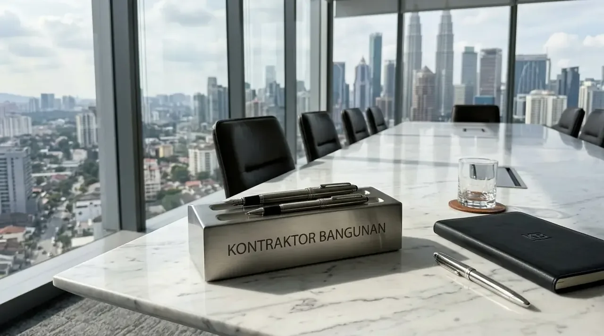

Mengapa Harus Menggunakan Besi Beton SNI untuk Proyek Gedung?
Besi beton bersertifikat SNI menjamin keamanan struktur bangunan komersial serta mencegah risiko kegagalan fungsi konstruksi di masa depan.
Berdasarkan data Badan Standardisasi Nasional (BSN) tahun 2025, penggunaan material baja tulangan berstandar SNI 2052:2017 mampu meningkatkan ketahanan struktur terhadap beban gempa hingga 35% dibandingkan penggunaan baja non-standar (banci).
Selain itu, laporan Survey Harga Bahan Bangunan Jawa Timur 2025/2026 mencatat bahwa alokasi pasokan langsung dari distributor resmi dapat menghemat biaya pengadaan material proyek hingga 14% dibanding pembelian eceran.
Standar mutu yang konsisten memastikan setiap batang besi beton memiliki batas toleransi diameter yang aman (maksimal 0.3–0.4 mm), sehingga pengerjaan fisik gedung berjalan presisi sesuai perhitungan teknis arsitek dan insinyur Kontraktor Bangunan.
- Uji Kuat Tarik & Kuat Luluh: Memiliki batas elastisitas dan kekuatan regang yang terverifikasi sertifikat uji laboratorium resmi (*Mill Test Certificate*).
- Uji Lengkung (Bending Test): Mampu ditekuk hingga sudut 180 derajat tanpa mengalami retakan atau patahan mikro pada serat baja.
Apa Perbedaan Besi Beton Polos dan Ulir untuk Konstruksi Komersial?
Besi beton polos memiliki permukaan mulus berdaya regang tinggi, sedangkan besi beton ulir memiliki sirip terpuntir untuk daya ikat beton lebih kuat.
Penggunaan kedua jenis baja tulangan ini disesuaikan dengan fungsi teknis pada komponen struktur bangunan:
- Besi Beton Polos (BjTP - Baja Tulangan Polos): Umumnya digunakan untuk sengkang (begel/beugel), ikatan tulangan praktis, dan pelat lantai tipis. Sifatnya yang fleksibel memudahkan proses pembengkokan (*bending*) di lokasi kerja tanpa risiko kerapuhan.
- Besi Beton Ulir (BjTS - Baja Tulangan Sirip/Ulir): Digunakan sebagai tulangan utama (*main bar*) pada kolom utama, balok bentang panjang, sloof, dan fondasi cakar ayam (*footplate*) gedung bertingkat. Ulir atau sirip pada permukaannya meningkatkan daya lekat geser (*bond stress*) dengan adukan semen dan kerikil beton.
Memahami spesifikasi kedua varian ini membantu tim pengadaan menghitung kebutuhan material secara presisi sesuai gambar kerja teknis (*Detail Engineering Design*).

Ketersediaan stok lengkap besi beton polos dan ulir berstandar SNI siap dikirim langsung menuju proyek konstruksi di wilayah Malang Raya.
Bagaimana Sistem Harga Pabrik Membantu Efisiensi Anggaran Proyek?
Sistem harga pabrik memotong margin perantara sehingga penyedia jasa konstruksi dan pengembang properti mendapatkan tarif grosir paling kompetitif di pasar Jawa Timur.
Sistem penetapan harga grosir langsung dari distributor resmi memberikan keuntungan nyata bagi manajemen finansial perusahaan:
- Skalabilitas Harga (Volume Discount): Pembelian dalam volume tonase besar (misalnya per truk Fuso 8-12 ton atau Tronton 20-25 ton) mendapatkan potongan harga khusus per kilogram.
- Kepastian Biaya: Mencegah dampak fluktuasi harga eceran harian di tingkat toko bangunan lokal yang sering berubah tanpa pemberitahuan.
- Transparansi Transaksi: Dilengkapi sertifikasi *Mill Test Certificate* asli dari produsen baja terkemuka sebagai bukti keaslian dan mutu material.
Kerjasama langsung dengan distributor resmi memastikan alokasi anggaran proyek tetap terkendali sesuai rencana kerja pengadaan (*Procurement Schedule*).
Apa Saja Layanan Utama Distributor Besi Beton SNI di Malang?
Layanan utama mencakup penyediaan stok terlengkap, pengujian sertifikasi mutu, serta logistik pengiriman armada berat langsung ke lokasi pengerjaan proyek.
Sistem distribusi modern dirancang untuk mendukung kelancaran jadwal pengerjaan di lapangan:
| Jenis Layanan | Spesifikasi Layanan | Keuntungan Bagi Pembeli |
|---|---|---|
| Pasokan Stok Lengkap | Diameter 6mm hingga 32mm (Polos BjTP 280 & Ulir BjTS 420B) | Menghemat waktu pencarian material dari berbagai vendor berbeda. |
| Logistik Langsung | Pengiriman armada Truk Colt Diesel, Fuso, hingga Tronton ke lokasi | Material tiba tepat waktu di area pengerjaan tanpa perantara tambahan. |
| Garansi Mutu | Sertifikat SNI resmi & *Mill Test Certificate* pabrikan | Terhindar dari produk banci, cacat struktural, atau baja non-standar. |
| Layanan Administrasi | Penerbitan Faktur Pajak Resmi (PPN), Surat Jalan, & Timbangan Akurat | Mempermudah audit pembukuan dan transparansi pengadaan korporat. |
Layanan menyeluruh ini memastikan setiap tahap pembangunan ruang komersial, ruko, gedung kantor, dan infrastruktur fisik berjalan tanpa hambatan logistik material.
Bagaimana Langkah Pemesanan Grosir Besi Beton di Malang?
Langkah pemesanan dilakukan melalui pengajuan daftar kebutuhan material, konfirmasi ketersediaan stok, hingga penerbitan jadwal pengiriman resmi.
Prosedur pengadaan besi beton skala besar dapat diselesaikan secara sistematis melalui tahapan berikut:
- Pengajuan Bill of Quantities (BoQ): Kirimkan rincian ukuran diameter, panjang, jumlah batang/tonase, dan spesifikasi kelas baja yang dibutuhkan untuk proyek Anda.
- Penerbitan Penawaran Resmi: Distributor menerbitkan lembar penawaran harga grosir pabrik bersaing beserta rincian skema pembayaran dan syarat teknis.
- Penjadwalan Logistik & Pengiriman: Setelah kesepakatan tercapai, armada pengiriman akan dijadwalkan menuju titik koordinat proyek di Kota Malang, Kabupaten Malang, atau Kota Batu sesuai tenggat waktu.
Langkah terstruktur ini mempermudah audit dokumen pengadaan material oleh tim manajemen proyek dan estimator finansial perusahaan Anda.
FAQ seputar Distributor Besi Beton SNI Malang
Kesimpulan Praktis
Mendapatkan pasokan dari distributor besi beton SNI grosir Malang harga pabrik adalah keputusan strategis untuk menjamin kualitas fisik dan efisiensi biaya proyek Anda. Ketersediaan material berstandar tinggi memastikan konstruksi gedung berdaya tahan maksimal. Optimalkan pengadaan material komersial Anda dan percayakan seluruh pengerjaan sarana bangunan Anda kepada Kontraktor Bangunan terpercaya.